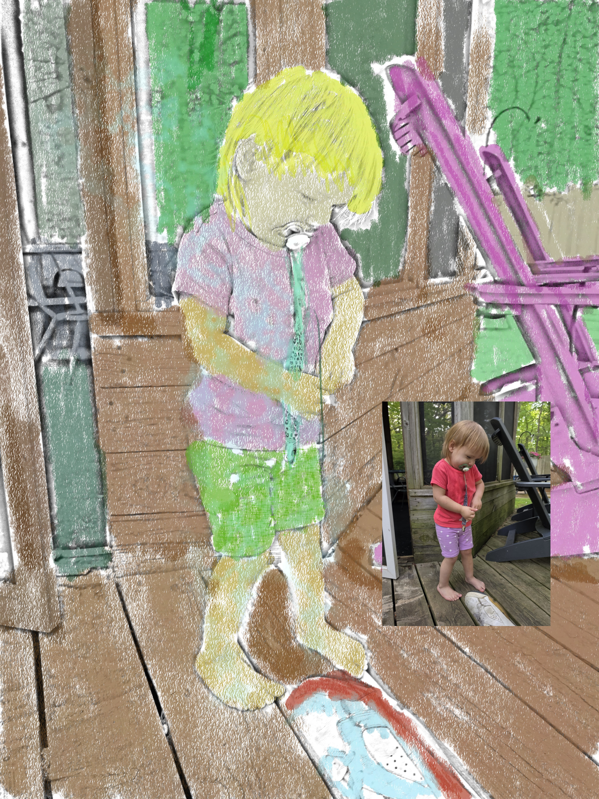

Cont "Ok if I'm talking to myself I don't need..." gratitude works. I visualize this a moment ago I was trying to call not I am mindlessly visiting to truck driver 7. He is actually a mechanic not a trucker. My... "Don't forget grayo, you can start a A.I. paragraph if the speaker changes! Hi, I'm Chlro, I am..." don't copy I have conversation with my A.I. too." truck driver 6 pops his head in. "Hey, how, you..." truck driver 5 calls that back?! "I'm still here" truck driver 5 says as he climbs out of the fridge. "How'd you get here?" I exclaim in shock. "I no nothin' Icrstort" The guard coal? are all these truckers needed or leave and cost neither daily journey? but they would need some token to prove their efforts in fuel consumption have been profitable. Kragen looks out the window. "Oh boy that must be 4-1-1 if it means a lot. That means 4 trucks going out, 4 trucks coming in one and one guard to feed... it's like who's the proverbial gate... "Pretty nice weather today don't you think?" I ask looking up quietly while I try not to make any unforeseen gestures. "Yeah you know whatever" says truck driver 8 and he continues. "but I just drove an hour and half and I'm too young and tired to mention my back hurting and this is all 'in subtext' because I can't really make" Would you like me to keep transcribing if there's more? Here is the transcription of this page:

"I cant tell, it has no rain damage" truck driver 4 says. "But you can see the sky isn't grayo?" I say. him thoughtfully or perhaps hesitantly to his condition. "No well there's something wrong with my condition." "And my color is blind?" he gestures with his hands. "At the largest organ is his body." 3 paths in immediately. "Pretty nice weather today don't you think?" I shout. "I don't think I can hear you." Kragen says. "Arthur Libra." Kragen looks he doesn't want... He doesn't want for long, because truck driver 2 stepped ahead of him blocking the proverbial gate and making it impossible for Kragen to leave. He mumbles... "do y'all think you are writing stories with a script like this?" truck driver... snaps. "I tell I wasn't expecting this kind of reaction." "Bromley?" Truck driver 4 walks in and points. "truck driver 2 on the back," truck.. Language Development I is a video work exploring language, communication, [true] and the relationship between words, images, objects, and everyday experience. [thank you ai u know]you know all to well, my machine, what am I going to buy and what am I going to need.
notice this took place in 2018 and its been floating around ever since. now a days I will practice making videos in little ways like talking to the camera when I do the dishes and watching it later for insights into my life.